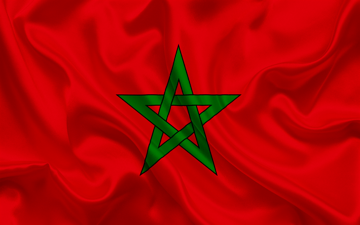

LA CULTURE DE L’OLIVIER AU MAROC
Importance et aire de culture de l’olivier au Maroc
Principale espèce fruitière cultivée au Maroc,
L’Olivier occupe une surface de 560.000 ha dont 220.000
ha en zone irriguée (Haouz, Tadla, Souss-Massa,
Moulouya, Nador, Boulemane, Oujda, El Kelaâ,
Marrakech, Chichaoua, Bénimellal Ouarzazate,
Tafilalet. Figuig, Essaouira), 200.000 ha en zone
de montagne (Chefchaouen, Taounate, Taza, Tanger,
Tétouan, Azilal, Khénifra, Al Hoceima), 100.000 ha
en zone bour favorable (Sefrou, El Hajeb, Fès,
Meknès, Sidi Kacem, Gharb, Loukkos, Benslimane)
et 40.000 ha dispersés entre Safi, Settat,
Khémisset et Khouribga. L’Olivier contribue à
l’emploi en milieu rural avec 11 millions de
journées de travail annuellement. La production
d’olive se situe autour de 560.000 T et permet de
générer 50.000 T d’huiles d’olives et 90.000 T
d’olives de table industrielles.
Exigences
agro-écologiques
Les températures, la pluviométrie,
le vent et la lumière.
L’olivier résiste jusqu’à
-8 à -10’C en repos végétatif hivernal Mais à 0
à -1°C, les dégâts peuvent être très importants
sur la floraison. A 35- 38°C, la croissance
végétative s’arrête et à 4O°C et plus, des
brûlures endommagent l’appareil foliacé et
peuvent faire chuter les fruits, surtout si
l’irrigation est insuffisante. Avec 600 mm de
pluie bien répartie, l’olivier végète et produit
normalement. Entre 450 et 600 mm, la production
est possible à condition que les capacités de
rétention en eau du sol soient suffisantes (sol
profond argilo-limoneux). Avec une pluviométrie
inférieure à 200 mm, l’oléiculture est
économiquement non rentable. Les vents chauds au
cours de la floraison, les brouillards et les fortes
hygrométries, la grêle et les gelées printanières
sont autant de facteurs défavorables à la floraison
et à la fructification. L’olivier étant exigeant
en lumière, l’insolation est à considérer dans le
choix de l’orientation des arbres, la densité de
plantation et les tailles d’éclaircie.
Le sol
Le
sol doit être profond, perméable, bien équilibré
en éléments fins (50% d’argile + limons) et 50% en
éléments grossiers (sables moyens et grossiers).
Le pH peut aller jusqu’à 8 à 8,5 avec, cependant
des risques d’induction de carence en fer et en
magnésie (cas de sols trop calcaires).
Les variétés
L’Oléiculture marocaine est constituée à 96% de la
variété population « Picholine marocaine », variété
à double fin, huile et conserve, d’une richesse
normale en huile, mais sensible à la maladie de
l’Œil de paon. Le reste du patrimoine est constitué
de Meslala, olive de conserve, de Picholine du
Languedoc, Dehbia, concentrées essentiellement en
irrigué (Haouz, Tadla, El Kelaâ), Ascolana dura,
Manzanille, Frantoïo, Picual Gordale Sévillane etc
… Deux clones de Picholine marocaine sont en cours
de diffusion.
Cycle végétatif et productif de l’olivier.
Au cours de son cycle annuel de développement, l’olivier
passe par les phases suivantes: (1) Janvier,
février: induction, initiation et différenciation
florale; (2) courant mars: croissance et développement
des inflorescences à raisselle des feuilles que
portent les rameaux de rannée précédente; (3)
Avril: pleine floraison; (4) Fin
Avril-début mai: fécondation et nouaison des
fruits; (5) Juin: début de développement et
grossissement des fruits; (6) Septembre: véraison;
(7) Octobre: maturation du fruit et son
enrichissement en huile et (8) Mi-Novembre en
janvier: récolte des fruits. La période la plus
intense du cycle annuel se déroule de mars à juin.
Au cours de cette phase, les besoins en eau et en
nutriments de l’arbre sont les plus intenses. La
durée de vie de r olivier s’étale sur plusieurs
dizaines d’années à des siècles. Les rendements
sont variables en fonction de l’âge des arbres,
des densités de plantation et des soins culturaux.
Pour des vergers de 400 arbres/ha conduits en
irrigué, les rendements sont de 3 T/ha à 4-5 ans
et de 15 T/ha à 8-9 ans.
Les Moulins et Cooperatives Oleicoles des Aples Maritimes (06).